Schneeberichte · Ratgeber
Tägliche Schneeberichte für Skifahrer: wo der Schnee liegt, was kommt und wo du fahren kannst, aus der SnowScope-Schneekarte und Messstationen. Jede Zahl stammt aus den Daten des Tages.


Region, Daten, Budget und Prioritäten wählen; jedes Skigebiet wird mit dem wahrscheinlichen Schnee zum Start, Skipass, Hotel und Essen pro Person, buchbaren Chalets und einem Spielmodus gereiht.

Alpine Tagespässe ab 36 EUR: neun Skigebiete im Vergleich nach Preis, Pistenkilometern und dem Schnee, den sie normalerweise bieten, um den besten Skitag für dein Geld zu finden.

Tagespässe in den Pyrenäen ab 46 EUR: sechs Skigebiete in Frankreich, Spanien und Andorra im Preisvergleich, dann im Vergleich der Schneelage, die dort im Dezember und Januar üblich ist.

Gletscherskifahren ab 68 EUR am Tag: Wir haben sieben Gletscher in Frankreich, Österreich, Deutschland und der Schweiz nach Preis und nach dem Schnee verglichen, den sie im Dezember normalerweise bieten.

Sechs Tage Skifahren ab 191 EUR: Wir haben zehn günstige Skiwochen in Europa nach Preis sortiert und dann 46 vergangene Winter geprüft, um zu sehen, wo der Schnee zuverlässig ist.
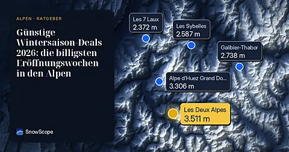
Von 20 EUR am Eröffnungswochenende bis zu 6-Tages-Pässen vor Weihnachten: ein Kalender der günstigsten Saisonstart-Angebote in den Alpen für 2026, mit dem Schnee, den du dabei erwarten kannst.

Beaver Mountain bietet Tageskarten zum Festpreis von 75 Dollar ohne Zuschlag in der Hochsaison. Anfang Dezember ist die Schneedecke oft dünn; ziel auf die Monatsmitte oder später ab, wenn der Schnee zuverlässiger ist.
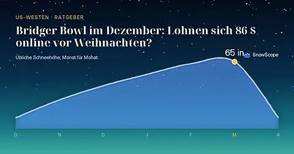
Bridger Bowl verlangt 86 $ online für 2026/27. Mittelhang hat am 15. Dezember in der Hälfte der Winter 50 cm; in der Weihnachtswoche steigen die Chancen auf 78 %.
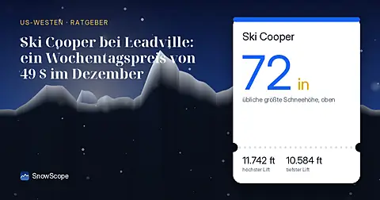
Das hochgelegene Skigebiet in Colorado hält sein Wochentag-Skiticket für 2026-27 bei 49 Dollar; die Schneehöhe in der Mittellage erreicht Mitte Dezember in einem typischen Winter 66 cm. Daten vom 13. November 2026.

Sunlight nahe Glenwood Springs ist im Dezember ein Glücksspiel in der Frühsaison. Mitte Dezember kannst du mit 67 cm in der Mittelhöhe rechnen, wobei aber nur 72% der Winter diese Tiefe erreichen.

Timberline hat Mitte Berg am 15. Dezember typischerweise 132 cm Schnee. Die oberen Hänge erreichen 147 cm. Tageskarten beginnen ab 129 USD in der Nebensaison.
Von Ski Cooper (49 $ unter der Woche, 99 $ am Wochenende) bis Mt. Baker (98,80 $ gegen 115,42 $): geprüfte Dezember-Preisunterschiede an sieben US-West-Skigebieten, mit ihren Schneechancen.

Indy Base Pass 419 $, Indy+ 469 $, zwei Tage in jedem Partnergebiet. Wir haben ihn den geprüften Dezember-Tagespreisen von sieben Indy-Gebieten gegenübergestellt, samt ihrer Schneechancen.

Das Midweek-Ticket bei Lookout Pass kostet 63 Dollar, wenn du es voraus reservierst. Mitte Dezember hält der obere Berg normalerweise 30-37 Zoll (75-95 cm). Daten vom 13. November 2026.

Lokales Skigebiet bei Missoula in knapp 2.296 m Höhe mit Tageskarten für 78 Dollar unter der Woche. Mittlere und obere Hänge haben Mitte Dezember typischerweise 76–93 cm Schnee. Daten vom 13. November 2026.

Schweitzers 3er-Pass gibt drei Tage für 249 Dollar auf einem Grat, der von 1.221 m bis 1.949 m ansteigt. Die Schneehöhe auf halber Höhe am 15. Dezember beträgt durchschnittlich 90 cm, wobei 85 % der Winter über 50 cm liegen.

Krvavec auf Mittelhöhe hat am 15. Dezember in 46 Wintern typisch 13 cm Schnee, aber in 11 davon blanken Boden. Tagesticket EUR 47.

Skifahre auf 157 km markierten Pisten in Serre Chevalier, wo die Bergspitze bis Mitte Dezember eine 100 %ige Schneewahrscheinlichkeit hat.

Turracher Höhe hat am 15. Dezember typischerweise 23 cm in der Mittellage, doch nur 39% der Winter erreichen dort Mitte Dezember 30 cm. Daten vom 13. November 2026.

Hochkar auf Mittelhöhe hat am typischen 15. Dezember 38 cm, und in 63 % der Winter gab es in dieser Woche 30 cm oder mehr. Tageskarten ab EUR 32,90 an ruhigen Tagen.

Idre Fjälls Dezember-Schneechancen verbessern sich nach Mitte des Monats deutlich. Am 13. November liegt die typische Schneehöhe auf Mittelhang am 15. Dezember bei 32 cm.

Brighton führt Anfang Dezember mit 37 Zoll (94 cm) typischem Schnee am 15. an. Wolf Creek zieht bis Weihnachten nach. Preise und Zuverlässigkeit verglichen.

Zehn europäische Skigebiete im Ranking für den Dezember, angeführt von Les 2 Alpes mit 75 cm Schnee auf mittlerer Höhe.

Brundage Mountain bietet zuverlässigen Frühsaisonschnee in der Nähe von McCall, Idaho. Die typische Schneehöhe in der Mitteldokumentation erreicht bis Mitte Dezember 77 cm, Tickets gibt es ab 65 Dollar an ausgewählten Tagen.

Boí Taüll startet auf 2039 m und schlägt Baqueira Beret beim Preis für den Tagesskipass, obwohl der Schnee Anfang Dezember Geduld erfordert.
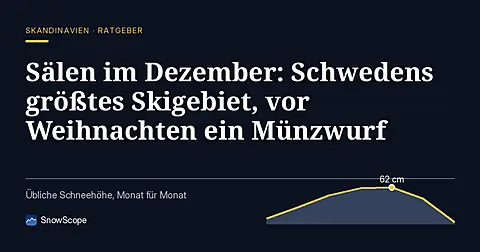
Sälen im Dezember: 28 cm an einem typischen 15. Dezember und 48 % der Winter mit 30 cm Mitte Dezember, weniger als in den 1980ern; Trysil nebenan schneidet besser ab.

Snow King liegt am Fuß von Jackson. Mitte Dezember hält sich die Mittelhöhe meist bei 71 cm. Datenstand: 13. November 2026.

Orcières Merlette bietet eine hohe Basis auf 1.826 m und einen 6-Tage-Pass ab 227 EUR, was es zu einer zuverlässigen Wahl für einen Skiurlaub im Dezember macht.
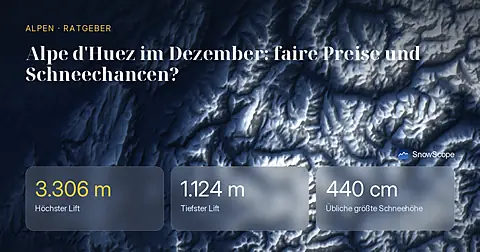
Lohnt sich Alpe d'Huez für Dezember 2026? Wir prüfen die Schneechancen, den Startpreis von 58,00 EUR und vergleichen es mit Les 2 Alpes.

Sloweniens Skipässe sind die günstigsten (Krvavec 205 EUR für 6 Tage), doch Naturschnee im Dezember ist dort selten; Lachtal, Hochkar und Mölltaler Gletscher schneiden besser ab.

Loveland verkauft online-Tickets für 60 $ bis 13. Dezember, dann 159 $ ab 14. Dezember. Frühdezember-Schneefall beträgt durchschnittlich 50 cm auf Mittelhöhe, die Basis ist aber nur halb so tief wie mitten im Winter.
Cauterets bietet 25 km Pisten für 46 EUR, aber unsere Schnee-Historie zeigt, dass die besten Chancen auf eine Schneedecke in der letzten Dezemberwoche liegen.

Lachtal kostet EUR 62 pro Tag, Kinder unter 7 Jahren fahren kostenlos. Die Mittelbahn hatte ab Dezembermitte in 72 % der Jahre 30 cm oder mehr. Schneehöhe vom 13. November 2026.
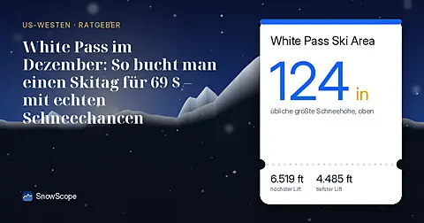
White Pass belohnt frühe Buchungen unter der Woche. Mitte Dezember liegt die Schneehöhe auf Mittelhang typischerweise bei 102 cm. Daten vom 13. November 2026.

Fahre diesen Dezember auf den 131 km Pisten der Forêt Blanche mit einem 6-Tage-Pass für 298 EUR.

Der 6-Tage-Pass in Ruka kostet EUR 265. Die Schneeaussichten steigen von 39% Anfang Dezember auf 85% in der Weihnachtswoche. Plane ab Mitte des Monats.

Bei Monterosa Ski kostet der Tagespass online 40,00 bis 71,00 EUR. Im Dezember liegt der Schnee oben: üblich 124 cm auf 3.030 m, 6 cm auf 1.207 m.

Wolf Creek hat typischerweise am 15. Dezember 87 cm in der Mitteltstation. Spitzenpreise beginnen am 20. Dezember. Daten: 13. November 2026.

Am 15. Dezember auf Fellhorn/Kanzelwand: 63 cm auf 1965 m Gipfel, 30 cm am Berg, nur 10 cm auf 918 m Tal. Plane entsprechend.

Plane deinen Dezember-Trip 2026 nach Les Orres, indem du die wöchentlichen Skipasspreise mit unserer Schneehistorie aus 46 vergangenen Wintern vergleichst.

Hemavans Mittelhöhe hat am typischen 15. Dezember 82 cm Schnee. In allen 46 Wintern gab es Mitte Dezember 30 cm oder mehr. Daten vom 13. November 2026.

Brightons mittlere Höhenlage hält typisch 94 cm am 15. Dezember. Datenstand 13. November 2026.

Vergleiche Grandvalira und spanische Skigebiete im Dezember 2026 bezüglich Schneehöhen, Lift-Höhen und Preisen ab 49,00 EUR.

Pitztaler Gletscher hält Dezemberschnee besser als die meisten Alpengebiete: 87 cm auf Mittelstufe Mitte Dezember, jeder Winter der letzten Jahre über 30 cm. Datenstand 13. November 2026.

16 US-Skigebiete nach Schneewahrscheinlichkeit am 15. Dezember und Tagesskipass-Preis für Erwachsene gereiht. Grand Targhee führt mit 100 % Wahrscheinlichkeit; fünf Gebiete kombinieren über 80 % Wahrscheinlichkeit mit Tickets unter $80. Daten vom 13. November 2026.

Für eine günstige Skiwoche mit der Familie im Dezember in Astún-Candanchú solltest du Ende Dezember anpeilen, wenn die oberen Pisten in 67 % der vergangenen Winter guten Schnee haben.

Nur Zugspitze und oberes Fellhorn halten zuverlässig 30 cm bis Mitte Dezember. Tiefere bayerische Berge sind günstiger, aber viel unsicherer. Daten vom 13. November 2026.
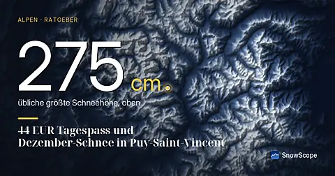
Puy-Saint-Vincent bietet einen 44 EUR Erwachsenen-Tagespass und soliden Dezember-Schnee in der Höhe, hier im Vergleich zum großen Nachbarn Serre Chevalier.
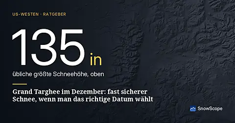
Grand Targhee bietet zuverlässigen Dezemberschnee in allen Höhenlagen. In der Mittelhöhe liegen typischerweise 118 cm bis Mitte Dezember vor, und in 100% der Winter wird die 50-cm-Marke erreicht oder überschritten. Daten vom 13. November 2026.

Oppdals Talstation hat am typischen 15. Dezember 60 cm Schnee, in 93% der Winter liegen Mitte Dezember mindestens 30 cm. Daten aus 46 Wintern.
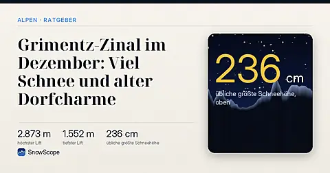
Grimentz-Zinal bietet 71 km Pisten und verlässlichen Schneesicherheit in großer Höhe für Ihre Dezember-Reise, mit 6-Tages-Pässen für CHF 339,00.

Österreich vor Weihnachten: Galtür 258 EUR und Kühtai 269 EUR für 6 Tage, mit 30 cm in über 90 % der Winter; Gletscher kosten mehr, kleine Hügel sind ein Risiko.

Planst du eine Reise nach Baqueira Beret im Dezember? Sieh dir unsere Schnee-Historie an, Ticketpreise ab 70,00 € für einen Tag und den Vergleich zu Astún-Candanchú.

Wir bewerten französische Skigebiete nach der Schneewahrscheinlichkeit im Dezember und den Skipasspreisen, beginnend bei 36,00 EUR für einen Tagespass für Erwachsene in Les Karellis.
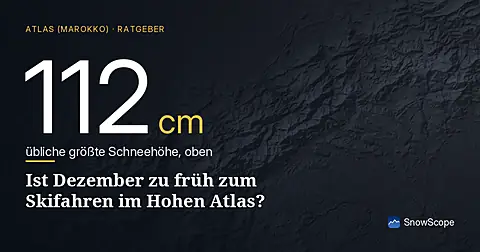
Der Dezember bringt nur 18 cm typische Schneehöhe auf Mittelhang in Oukaimeden, gegenüber 53 cm im März. Die Frühjahrsaison ist dünn, aber möglich. Daten 13. November 2026.

Galtürs Mittelstation hält am typischen 15. Dezember 55 cm. Nebensaison-Skipässe kosten EUR 55,50 bis 18. Dezember. Daten aus 46 Wintern, 1980–81 bis 2025–26.
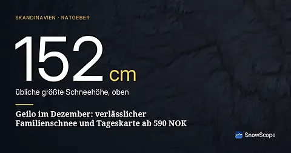
Geilos Mittellage bleibt in 96% der Dezember-Winter befahrbar. Typische Schneehöhe am 15. Dezember: 42 cm Tal, 57 cm Mitte, 68 cm Gipfel. Tageskarte ab NOK 590.

Grandvalira wird oft als günstiges Skigebiet für Dezember verkauft, doch der Naturschnee an der Talstation liegt in den vergangenen Wintern im Schnitt bei nur 9 cm.
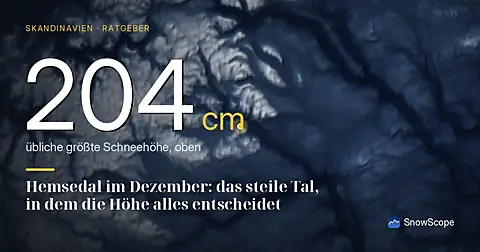
Am 15. Dezember zeigt Hemsedal 32 cm in der Talstation, 70 cm auf Mittelberg und 106 cm am Gipfel. Die Höhe ist entscheidend.

Am 15. Dezember hat Hintertux auf 3245 m 98 cm Schnee in 46 Wintern Geschichte. Jeden Winter gab es in der Woche vor Weihnachten dort oben 30 cm oder mehr.
Vergleiche die Schneechancen im Dezember und geprüfte Skipasspreise ab 40,00 EUR in italienischen Skigebieten für deinen Wochenendtrip mit dem Auto.

Kühtais Basis auf 1939 m bleibt im Dezember zuverlässig schneesicher. Am 15. Dezember typischerweise 60 cm in der Basis, 72 cm auf Mittelhöhe, 112 cm oben. Nebensaison-Sechstagespass EUR 269 bis 18. Dezember.

Les 2 Alpes reicht bis auf 3.511 m für viel Schnee im Dezember 2026, mit einem 6-Tage-Skipass für Erwachsene für 266,50 EUR.

Les Karellis bietet 45 km Pisten und einen 6-Tage-Skipass für Erwachsene für 191,00 EUR mit einer 98 %igen Schneewahrscheinlichkeit auf mittlerer Höhe Ende Dezember.

Levis Dezemberschnee hat sich im Laufe der Zeit verfestigt. Letzte 15 Winter: 100 % der Weihnachtswochen hatten 30 cm oder mehr. Typische Tiefe 15. Dezember: 38 cm. Daten 13. November 2026.

Fahr Ski in Livigno für 51,50 EUR pro Tag vor dem 18. Dezember, wenn der Schnee am Gipfel in 100 % der vergangenen Winter 30 cm erreicht.

Am 15. Dezember in Michlifen sind 89% der Winter fast schneefrei. Die beste Chance kommt nach einem Sturm, nicht nach dem Kalender. Daten vom 13. November 2026.

Montgenèvre hat im Dezember üblicherweise 56 cm Schnee an der Talstation und bietet Wochenendfahrern damit eine bessere Schneelage als Sestriere auf der anderen Seite der Grenze.

Skifahren in Obertauern im Dezember: 43 cm an einem typischen 15. Dezember an der Mittelstation, 6-Tage-Skipass vor Weihnachten 331 EUR.

Am Skigebiet Oukaïmeden in Marokko bringt ein typischer 15. Dezember nur 16 cm in der Mittelhöhe. SnowScope zeigt Chancen aus 46 Wintern Daten.

Oukaïmeden liegt 50 km von Marrakesch entfernt. Dezemberschnee ist dünn und unberechenbar: Plane um Stürme herum, nicht nach dem Kalender. Daten vom 13. November 2026.
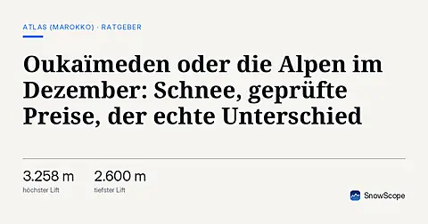
Am 15. Dezember hat Oukaïmeden auf Mittelhöhe 16 cm gegenüber Val Thorens 89 cm. Wir haben Liftpreise überprüft. Daten vom 13. November 2026.

Pila oberhalb von Aosta bietet einen günstigen Tagesskipass für 60,00 EUR und zuverlässigen Schnee im Dezember auf den oberen Pisten.
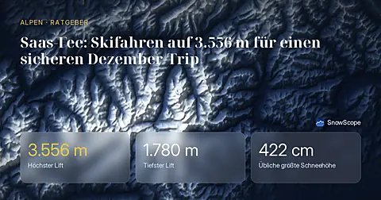
Die Lifte in Saas-Fee erreichen 3.556 m, wo unsere Schnee-Historie zeigt, dass 100 % der vergangenen Winter bis Mitte Dezember mindestens 30 cm Schnee hatten.

Schneetiefe in Mittelhöhe erreicht in 83–100 % der Dezember-Winter in Skandinavien 30 cm. Festpreise in Finnland; dynamische Preise in Norwegen und Schweden. Daten aus 46 Wintern, 13. November 2026.
Dezember-Schneechancen aus 46 Wintern und geprüfte Tagespreise: Ski Cooper 49 $, Les 3 Vallées 75,70 €, Oukaïmeden ohne offiziellen Tarif. Wo ein günstiger Dezember-Skitag funktioniert.

Entdecke die ruhigen Pisten von St-Luc Chandolin, wo die Schneehöhe auf mittlerer Höhe in 98 % der Winter Ende Dezember 30 cm erreicht.

Trysil im Dezember: 44 cm an der Mittelstation an einem typischen 15. Dezember, 83 % der Winter mit 30 cm Mitte Dezember; die Preise sind dynamisch, also früh buchen.

Valloire-Valmeinier bietet 131 km Pisten und eine 98 % Chance auf 30 cm Schnee auf halber Höhe bis Mitte Dezember.

Zugspitze-Gletscher hat am 15. Dezember typischerweise 122 cm Schnee auf 2.627 m; Garmisch-Classic-Spitze 57 cm. Gleicher Preis, unterschiedliche Schneedecke. Daten aus 46 Wintern.

Mölltaler Gletscher im Dezember: 66 cm am tiefsten Lift (2103 m) und 128 cm an der Mittelstation an einem typischen 15. Dezember; 6-Tage-Skipass Nebensaison 332 EUR.

Mt. Baker im Dezember: 46 in (116 cm) Schnee auf halber Höhe an einem typischen 15. Dezember, und ein 98,80-$-Ticket von Montag bis Donnerstag, das es nur am Tag selbst an der Kasse gibt.

Kannst du dich als vorsichtiger Anfänger im Dezember auf Courmayeur verlassen, wenn es auf halber Höhe in unseren vergangenen Wintern im Schnitt 60 cm Schnee gibt?

Buche 15.–21. Dezember in Åre für die besten Schneechancen vor den Weihnachtsmassen. 89 % der Winter hatten in dieser Woche 30 cm auf Mittelhöhe. Daten vom 13. November 2026.

Der Gipfelfinder von SnowScope ist eine kostenlose Gipfel-App: Richte dein Handy auf die Berge und die App nennt dir die Gipfel, mit Höhe, Entfernung und Gehzeit. Unsere Tests: 98 % der angezeigten Gipfel sind wirklich in Sicht, und auf echten Fotos korrigierte sie Kompassfehler von bis zu 105° auf 0,15°. Kostenlos mit 3 Namen, alle Gipfel einmalig für 0,99 €.

Der Pistenplan von Sillian (Hochpustertal) mit unserer Schneeschicht am 13. November 2026: 8,6 cm am Gipfel auf 2399 m, untere Hänge aper, und eine Woche mit Regen und Schnee gemischt, Schneefallgrenze bei 1.800 bis 2.000 m.

Schneelage in Silvretta Montafon am 13. November 2026: 4,5 cm am Gipfel auf 2421 m, Mittelstation und Tal noch aper, diese Woche rund 40 cm in der Höhe, im Tal Regen unter 1.500 m.

Schneebericht Lech Zürs am 13. November 2026: rund 6 cm oben (2436 m) und an der Mittelstation, aper in Lech auf 1430 m. Diese Woche oben 42 cm nach unserer Prognose, bis 91 cm nach anderen, Regen und Schnee gemischt um 1400 m. Und warum Lech die schneereiche Seite des Arlbergs ist.

St Anton hat am 13. November 1 cm an der Spitze und 5 cm auf Mittelhang. Die kommende Woche bringt 33 bis 42 cm, aber Regen im Tal.
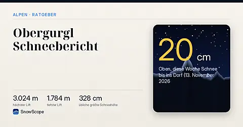
Schneebericht Obergurgl am 13. November 2026: rund 20 cm oben (3024 m), 5 cm an der Mittelstation, schneefrei an den untersten Liften (1784 m). Schneeprognose der Woche: 34 cm oben, 21 cm unten, Schneefallgrenze um 1700 m. Dazu der übliche Saisonstart.
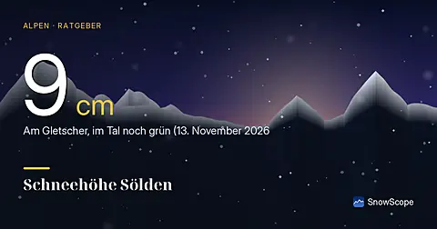
Die Schneehöhe in Sölden am 13. November 2026: rund 9 cm oben auf 3245 m, 5 cm an der Mittelstation, nichts im Tal auf 1346 m. Diese Woche 25 cm oben, Regen unter etwa 1620 m. Gletscher gegen Dorf, dazu 46 vergangene Winter.
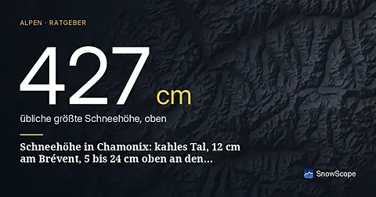
Die Schneehöhe in Chamonix am 13. November 2026, Höhe für Höhe: nichts im Talboden, 1 cm auf 2001 m, 12 cm oben am Brévent-Flégère (2486 m), 5 bis 24 cm oben an den Grands Montets (2768 m). Rund ein Meter in der Höhe diese Woche erwartet, Regen im Tal. Wie tief es in Chamonix üblicherweise wird, aus 46 Wintern.

Schneehöhe in Ischgl am 13. November 2026: rund 5 cm oben (2868 m), 4 cm an der Mittelstation, nichts im Tal auf 1352 m. Diese Woche bis zu 42 cm am Grat, im Paznaun Regen unter etwa 1570 m. Dazu Tal und Grat in 46 vergangenen Wintern.
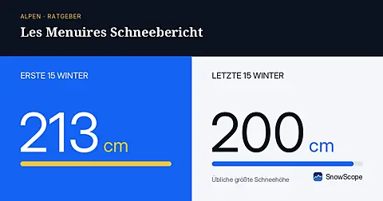
Schneebericht Les Menuires vom 13. November 2026: 28 cm am Gipfel (2838 m), nichts liegt auf 2112 m oder 1386 m. Etwa 80 cm am Gipfel in sieben Tagen erwartet, Schneefallgrenze um 1500 bis 1700 m. Warum Val Thorens, 450 m höher im selben Tal, schon mehr hat.


Verglichen wurde der Schnee am 10. November mit der größten Schneehöhe jedes Winters, in 46 Skigebieten über 46 Winter. Ein schneereicher Start hilft, aber weniger, als viele Skifahrer denken.

Ein Sturm am 4. November brachte 8 bis 13 inches Neuschnee an fünf hoch gelegenen Stationen in Colorado nahe Aspen. Fünf Tage später war die Hälfte weg. Was das für Powder-Tage bedeutet.

Drei magere Winter in Folge endeten 2025-26; dieser Herbst hat normal begonnen.

Eine Neigungskarte von Les Grands Montets und sieben weiteren Skigebieten zeigt, wie viel Gelände steiler als 30°, 35° und 40° ist – und warum diese Grenze für Lawinen zählt.

In 24 von 46 Wintern hatten die Skigebiete auf der italienischen und südfranzösischen Seite der Alpen einen relativ stärkeren Winter als die Nordseite. Die Grafik, die großen Jahre und das Wetter dahinter.

Schnee im Dezember hängt vor allem von der Höhe ab. 46 vergangene Winter in 676 Alpen-Skigebieten zeigen, wie viel Schnee am 1., 15. und 22. Dezember zu erwarten ist, von unter 1.200 m bis über 2.400 m.

Whistler Blackcomb bekam in einer Woche 75 cm Neuschnee am Gipfel, dann einen warmen Sturm mit 124 mm Wasser. Ein einfacher Leitfaden zu Unterlage, Neuschnee, Regen und Harschdeckel.

Ein günstiger 3-Tage-Plan am Comer See im Dezember mit echten Preisen 2026-27: Züge, Schiffe, Standseilbahn und ein Skitag in Piani di Bobbio oder Madesimo, die Ersparnis gegenüber Cortina und die Chance auf Schnee zu Weihnachten.

Der Schnee heute in Livigno, was die europäische Saisonprognose für den Dezember sagt, und warum die Höhe zu Weihnachten gegen einen milden Monat gewinnt.

Schnee heute in Cortina, die europäische Saisonprognose für Dezember und unsere Chancen auf weiße Weihnachten in den östlichen Dolomiten.

Dolomiten-Vorhersage für Dezember 2026: 1,7 °C wärmer, etwas feuchter, 30 cm Schnee bis Jahresende, Weihnachten in der Mittelhöhe weiß. Daten vom 10. November.

Wie viel Wasser der Schnee im Atlas im Februar 2027 halten könnte: Die europäische Saisonprognose ist etwa 3 °C wärmer und im Westen und Süden nasser, die Schneechancen in Marokkos Flussgebieten bleiben gering.

Januarprognose für Marokkos Atlas: 69 Millionen m³ Schneewasser erwartet, deutlich unter dem Durchschnitt von 206. Daten vom 10. November 2026.

Bou Iblane bleibt bis in den Dezember hinein schneefrei. Saisonprognose: 2,3°C wärmer als üblich, nur 22 cm Neuschnee erwartet, 0 cm Schneebelag am 31. Dezember. Daten: 10. November 2026.

Saisonausblick für die Rockies: wärmerer Dezember bevorsteht, Schneefall nahe dem Normalwert, aber der Norden deutet auf weniger Schnee, während Colorado und Utah unentschieden bleiben. Daten vom 10. November 2026.

Der Dezember in den Südalpen wird wärmer und nasser als üblich, aber die Schneehöhe zum Jahresende sollte nahe am Normalwert bleiben. SnowScope-Analyse vom 11. November 2026.

Oukaimeden erwartet einen warmen Dezember mit 13 cm Schneeprognose am 31. Dezember, deutlich unter den üblichen 26 cm. Daten vom 10. November 2026.
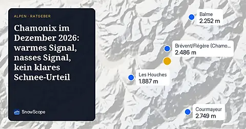
Chamonix startet den Dezember mit 27 cm in der Höhe, aber dünne Schneedecke darunter. Wärme und Nässe drücken gegeneinander; erwarten Sie nahezu normalen Dezemberschnee. Daten vom 10. November 2026.

Vail in Zahlen: übliches Maximum von etwa 64 in (162 cm) an der Mittelstation in 46 vergangenen Wintern, März am schneereichsten, dazu Gelände, Anreise, Sicherheit.
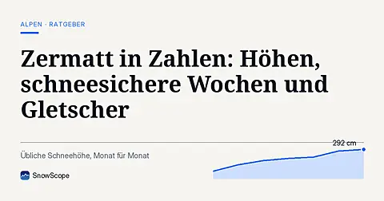
Zermatt in Zahlen: wo der Schnee hält, die sichersten Monate und die Anreise ins autofreie Dorf, aus 46 vergangenen Wintern.

Steamboat, Colorado, für Familien: was für Kleinkinder, Schulkinder, Teenager und Eltern passt, mit dem Schnee aus 46 vergangenen Wintern auf drei Höhen.

Ist Verbier etwas für Anfänger? Wann ist der Schnee am besten? Wie kommt man hin? Antworten zu den 4 Vallées und 46 vergangenen Wintern.